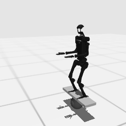

Runtime
Seeded reset, native state, position controls, reward, termination and EGL RGB rendering.
latency-sensitive-bench / baseline smoke
HumanoidBench's rolling-board balance task now runs through the generic Gymnasium scheduler and a native continuous Sample Factory APPO policy.
01 · Outcome
Seeded reset, native state, position controls, reward, termination and EGL RGB rendering.
20,480 CPU environment steps produced a checkpoint with a 61-dimensional continuous action distribution.
The latest checkpoint completed deterministic L0 evaluation and wrote metrics, action traces and video.
No language policy, StarVLA decoder, demonstration export or VLA fine-tuning was run.
02 · Frozen contract
h1hand-balance_hard-v0.LatencyBench/H1HandBalanceHard-v0.Box(-1, 1, (61,), float32).Box(..., (177,), float64).env_fps: 50, obs_fps: 50, one state frame.[-1, 1].Runtime API probe · Complete env YAML

03 · Compatibility boundary
One family registry maps five benchmark task keys to their official HumanoidBench IDs and native horizons.
Three removed 3.1 named-index fields are deleted before HumanoidBench constructs its indexers.
Sample Factory's 61-value Python list is converted to the declared float32 ndarray.
Observation, reward, termination, rendering and action values pass through unchanged.
The compatibility code is owned once by the HumanoidBench family. The generic Gymnasium adapter and Sample Factory integration were not modified.
04 · APPO smoke
| Stage | Result | Evidence |
|---|---|---|
| Focused tests | 27 passed | Five-task family runtime, parity, config equality and Sample Factory reference env. |
| Training | 20,480 steps at 279.7 FPS | Final checkpoint checkpoint_000000080_20480.pth. |
| Deterministic L0 eval | Return 12.391, length 18 | One seed, zero scheduled latency, 18 issued actions. |
05 · Reproduction
git submodule update --init third_party/sample-factory third_party/humanoid-bench
apt-get install -y libegl1
uv pip install --python .venv/bin/python -e third_party/sample-factory
uv pip install --python .venv/bin/python \
'jax==0.4.28' 'jaxlib==0.4.28' 'numpy==1.26.4' \
'scipy==1.15.3' 'ml-dtypes==0.5.3' 'opt-einsum==3.4.0' \
'imageio==2.34.2'
uv pip install --python .venv/bin/python --no-deps -e third_party/humanoid-benchMUJOCO_GL=egl .venv/bin/python scripts/scaffold_humanoidbench.py \
--task-name h1hand_balance_hard \
--report-path artifacts/h1hand_balance_hard/api_probe.json \
--env-yaml-path artifacts/h1hand_balance_hard/env_block.yaml
MUJOCO_GL=egl WANDB_MODE=disabled .venv/bin/python -m pytest -q \
tests/envs/test_gymnasium_humanoidbench.py \
tests/envs/test_gymnasium_env_adapter.py \
tests/training/test_gymnasium_sf.pyMUJOCO_GL=egl WANDB_MODE=disabled .venv/bin/python -m training.train \
--config configs/examples/gymnasium/h1hand_balance_hard/small_model_train.yaml
MUJOCO_GL=egl WANDB_MODE=disabled .venv/bin/python -m latency_bench.run \
--config configs/examples/gymnasium/h1hand_balance_hard/small_model_eval.yaml06 · Limits
starvla_eval.yaml records the future task contract but remains NOT RUN.See the Gymnasium adaptation index.